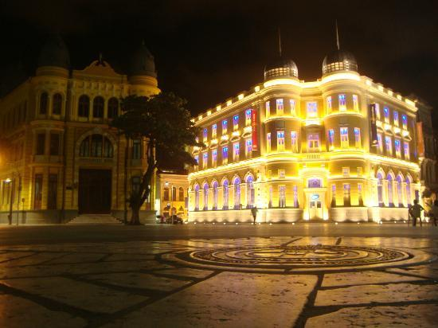

Marco Zero
O Marco Zero em Recife é um dos destinos históricos mais importantes do nordeste do país. A região reúne atrações históricas e culturais, centro de artesanato e ótimos restaurantes. Além disso, é o principal local do carnaval de Pernambuco, reunindo música, alegria e muita festa. A seguir, saiba mais detalhes sobre o destino.
Texto retirado de https://www.viajali.com.br/marco-zero-recife/